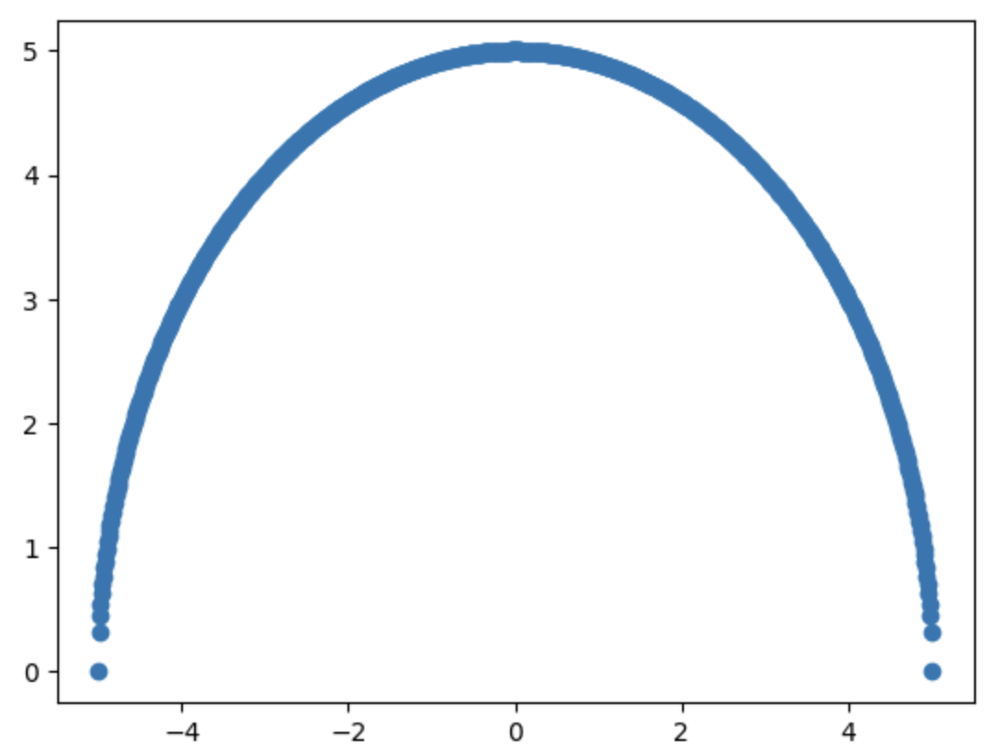
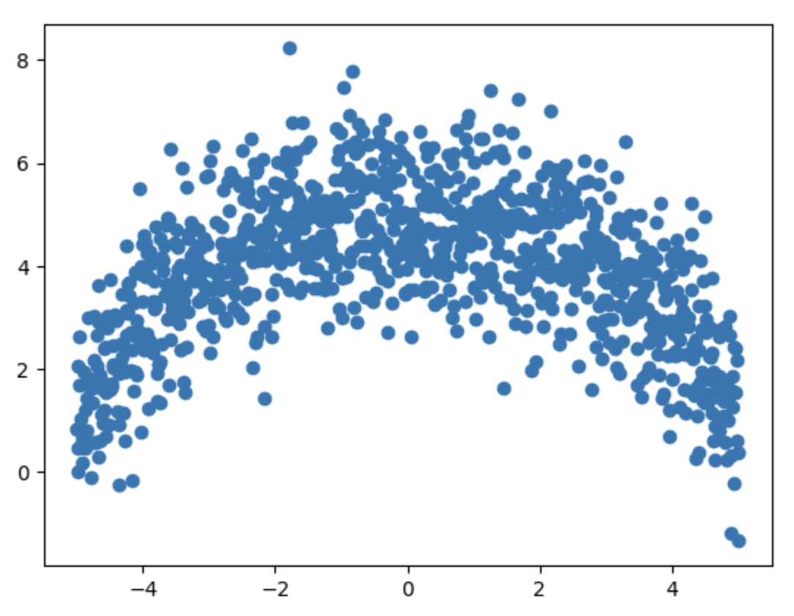
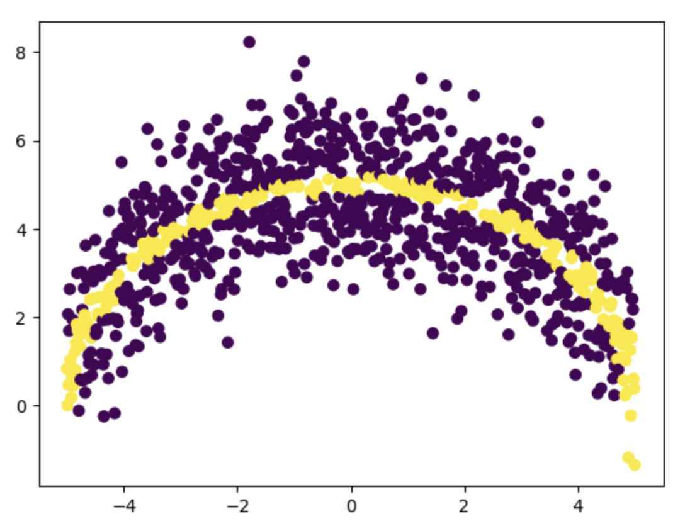
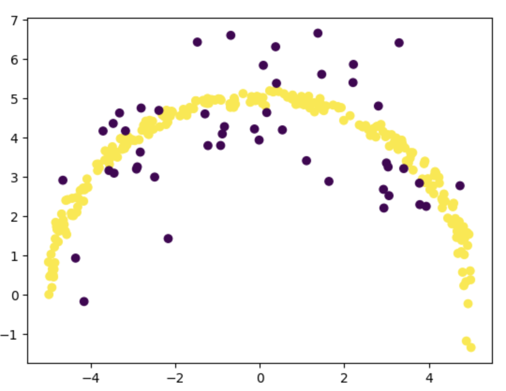
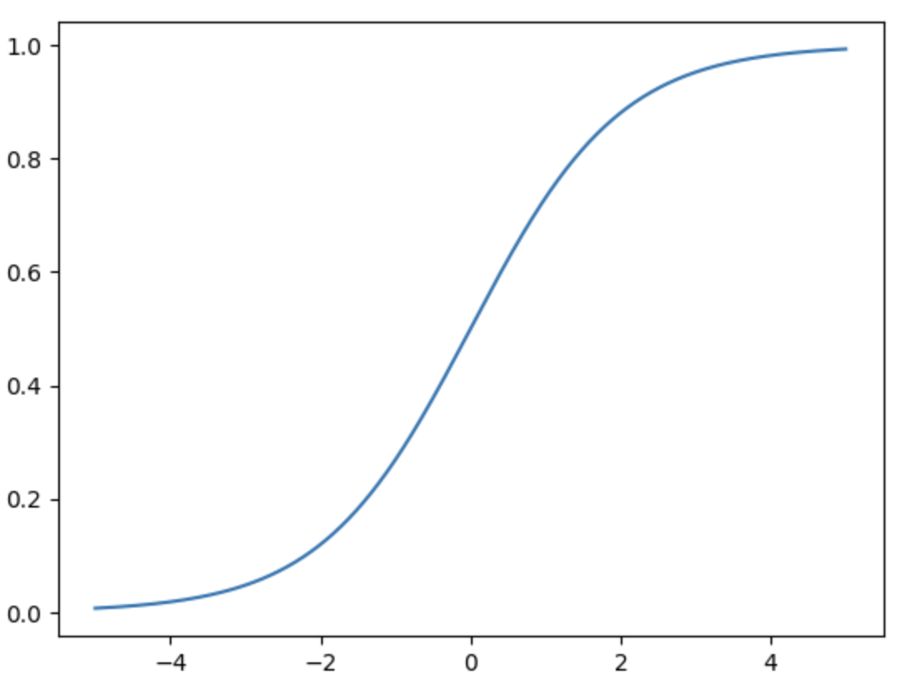

Neural Network Learns a Half-Circle
Theories truly come alive when we apply them to real world problems. The greater the scale and complexity of a challenge, the more engaging and demanding it becomes. On the other hand, tackling simpler problems with newly acquired tools often makes the learning process smoother and more intuitive.
I am talking about my recent progress in understanding of neural networks. I believe it is time to experiment and enhance my understanding of the topic. For that I am considering a simple problem, one that has been solved for centuries. Given a point P on the XY-plane, how can we determine whether it lies on a circle centered at the origin (0, 0) with radius r?
For anyone familiar with basic geometry, this is a straightforward nonlinear problem. A circle with radius r and centered at the origin can be described by the following equation.
\[x^2 + y^2 = r^2\]This can be written as a bivariable function of x and y.
\[F(x,y) = x^2 + y^2 - r^2\]Therefore, if a given point satisfies the equation, or if the function \(F(x, y)\) returns zero for point \(P\) then the point lies exactly on the circle. For any point outside the circle, \(F(x, y)\) yields a positive value; for points inside the circle, it returns a negative value. Simple math, isn't it?
Now, let's set aside the geometric equation of the circle. Suppose we're only given a set of points, some of which lie on the circle, and some don't. Our goal is to build a model that can learn to distinguish whether they lie on the circle or not. In simple terms, we want to train a neural network using the labeled data, so that it can predict whether a new point \(P\) lies on the circle or not.
If you're familiar with the Universal Approximation Theorem, you'll know that a neural network with a single hidden layer and a non-linear activation function can approximate any continuous, non-linear function within a specific range. This means that, in theory, our model should be capable of learning the boundary of the circle from the training data.
Therefore, let's try building a neural network to model the circle. Since a circle is continuous, bounded, and non-linear, it's a great candidate for approximation using a simple neural network with one hidden layer. To keep things simple, let's focus only on the upper half of the circle. There are two reasons for this choice. First, it saves us the effort of generating training data for the lower half. Second, it allows us to start with less precision near the boundary regions. Later, we can fine tune the network to improve accuracy at the edges.
From this point onward, I'll assume that the reader is comfortable with the basics of Python, neural networks, the PyTorch library, and NumPy. Without familiarity with these tools and concepts, the coming sections may be difficult to follow.
Preparing the training data
The first step in any neural network problem is preparing the training data. Let's begin by defining a few parameters for generating this data. Let's consider points that are very close to the half-circle as being on the half-circle. In other words, we'll add a bit of noise to simulate real world conditions where data is rarely perfect or exact.
N = 1000 # number of points
radius = 5 # radius of the circle that we want to model
epsilon = 0.1 # a threshold distance from the curve
let's generate \(x, y\) coordinates
xs = np.linspace(-radius, radius, N)
ys_original = np.sqrt(25 - xs**2)
Let's plot these points to visualize our half circle.
plt.scatter(xs, ys_original)

Since we're using a scatter plot, the circle appears as a thick line. Also, note that there are fewer points near the boundaries, which may affect the model's accuracy in those regions.
Now let's generate some notice and add noise to the ys_original so that points scatter around the half-circle.
# generate values with a mean 0 and standard deviation of 1
noise = np.random.normal(loc=0, scale=1, size=ys_original.shape)
ys = ys_original + noise
The plot of generated points xs, ys now looks as follows.

We now have points scattered around the actual upper half of the circle. Some of these points lie on the curve, while others fall outside it. Our first task is to identify and visualize the points that are very close to the true arc. We'll assign a label of 1 to points that are on or very close to the arc, and 0 to those that are not.
To do this, lets's use the distance formula. For each point, we calculate its distance from the origin \((0, 0)\), then subtract the radius \(r\). If the absolute difference is less than a small threshold epsilon then we consider the point to be on the circle and label it as 1. Otherwise, we label it as 0.
def distance(point, radius):
x, y = point
distance_from_origin = np.sqrt(y**2 + x**2)
distance_from_curve = abs(np.sqrt(y**2 + x**2) - radius)
return distance_from_curve
# let's generate samples
samples = []
for x, y in zip(xs, ys):
if distance((x, y), radius) < epsilon:
samples.append([x, y, 1])
else:
samples.append([x, y, 0])
samples = np.array(samples)
Now let's visualize the samples
plt.scatter(samples[:, 0], samples[:, 1], c=samples[:, 2])

In the scatter plot above, we've highlighted which points lie on or very close to the half circle, and which lie outside it. However, there are significantly more points outside the circle than on it. To ensure better training accuracy, our dataset should include a higher proportion of positive samples. So, let's split the dataset into positive samples (label 1) and negative samples (label 0), and then limit the number of negative samples to at most 20% of the number of positive samples.
positive_samples = samples[samples[:, 2] == 1]
negative_samples = samples[samples[:, 2] == 0]
shuffle -ve samples to randomize the order
np.random.shuffle(negative_samples)
limit number of -ve sample to 20% of total +ve samples
sub_sample_length = int(len(positive_samples)\*0.2)
negative_samples_sub = negative_samples[:sub_sample_length]
train_samples = np.concatenate((positive_samples, negative_samples_sub))
Now let's visualize our train_sample
plt.scatter(train_samples[:, 0], train_samples[:, 1], c=train_samples[:, 2])

You can see that the number of points that we have for training is much less than generated samples of size N. You can use a higher value for N (say 10000) to generate more points and a better training_sample.
Finally lets shuffle the training sample to randomize the order of points.
np.random.shuffle(train_samples)
Build the dataset for training
Datasets provide a convenient way to organize and batch training data efficiently. For our problem, we'll define a custom CircleDataset class. By default, NumPy uses float64 as its standard data type. However, PyTorch prefers float32 for better performance and lower computational overhead. To align with PyTorch's expectations, we'll use the float() method to convert our data from float64 to float32.
class CircleDataset(Dataset):
def __init__(self, inputs, labels):
super().__init__()
self.inputs = torch.from_numpy(inputs).float()
self.labels = torch.from_numpy(Y).unsqueeze(1).float()
def __len__(self):
return len(self.inputs)
def __getitem__(self, idx):
return self.inputs[idx], self.labels[idx]
Here train_samples has a shape of nx3. The function unsqueeze will add one more dimension to match the shape of inputs.
# select the inputs which are first two values in each row.
XS = train_samples[:, [0, 1]] # inputs
This is an advanced indexing technique : on the first dimension selects all the rows, an array [0, 1] in the second dimension selects the first and second elements from every row.
# select the labels which are the last value in each row.
Y = train_samples[:, 2] # labels
Using the input features XS and the corresponding labels Y, we can initialize our dataset.
Once the dataset is ready, we create a DataLoader object with a specified batch size to handle batching automatically during training. We use the drop_last=True option to discard the final batch because it may contains fewer samples than the specified batch size. This helps maintain consistent batch sizes.
dataset = CircleDataset(XS, Y)
dataloader = DataLoader(dataset, batch_size=10, shuffle=True, drop_last=True)
Once we have the data loader we can use iterators to iterate over the dataset in batches.
data_iter = iter(dataloader)
inputs, labels = next(data_iter)
print(inputs)
print(labels)
tensor([[1.6667, 4.7668],
[-2.9668, 3.0158],
[ 0.8446, 4.8664],
...
[ 0.1475, 4.9302]])
tensor([[1.],
[0.],
[1.],
...
[1.]])
Building the model
The model we're going to build is a simple sequential neural network with a single hidden layer. We'll start with 16 neurons accepting 2 inputs in the input layer, 16 in the hidden layer, and 1 neuron in the output layer.
Why 16? Think of it this way, we're roughly dividing the upper half of the circle into 37 segments, 16 from the input layer, 16 from the hidden layer, and 1 final output. Each neuron contributes to modeling a small segment of the curve. With more neurons (and more data), the network could approximate the circle more precisely by learning shorter, more detailed line segments.
Based on the value outputted by the model we can decide whether the point is on the circle or not. We are using ReLU() as the activation function on input and the hidden layer for the non linear transformation.
class CircleModel(nn.Module):
def __init__(self):
super().__init__()
input_layer = nn.Linear(2, 16)
hidden_layer = nn.Linear(16, 16)
output_layer = nn.Linear(16, 1)
self.network = nn.Sequential(
input_layer,
nn.ReLU(),
hidden_layer,
nn.ReLU(),
output_layer)
def forward(self, x):
return self.network(x)
We can initialize the model as follows
model = CircleModel()
Next, let's define a function that uses our trained model to determine whether a given point lies on the circle. However, note that the raw output from the model isn't a probability, it is just a real number. To interpret it as a probability, we can pass the output through a sigmoid function, which maps any real valued input to a range between 0 and 1. This makes it easier to apply a threshold (e.g., 0.5) and classify the point as either on or off the circle. The sigmoid function has an S shaped curve and is defined as follows.
Its graph looks like this:

def is_on_circle(x, y, debug=False):
inputs = torch.tensor([x, y]).unsqueeze(0).float()
with torch.no_grad():
logit = model(inputs)
prob = torch.sigmoid(logit).item()
if debug:
print(f"Probability {prob * 100:.2f} %")
if prob > 0.95: # 95% threshold probability
return True
else:
return False
Let's predict the probability for any point on the circle, say (0, 5) which we know is clearly on the half circle.
is_on_circle(0, 5, True)
Probability 54.03 %
False
Our untrained model predicted that the point (0, 5) could be on our half circle with a probability of 54%. Since that probability is below the threshold (95%) it says that the point is not on the half circle. Which is clearly an incorrect prediction. In order to get accurate prediction we now need to train the model.
Training the model
Model training involves iterating over the data in batches and updating the model's weights using gradient descent. Since the updates are performed on mini-batches rather than the entire dataset at once, this approach is called stochastic gradient descent (SGD).
In our case, we're using the BCEWithLogitsLoss function, which combines a sigmoid activation with binary cross-entropy loss (BCELoss) in a single, efficient operation. This function is numerically more stable than manually applying a sigmoid followed by BCELoss.
For optimization, we're using the Adam optimizer, an adaptive optimization algorithm that combines the benefits of AdaGrad and Momentum, offering faster convergence.
The training code is as follows.
# Training
loss_function = nn.BCEWithLogitsLoss()
optimizer = optim.Adam(model.parameters(), lr=0.01)
epoches = 1000
for epoch in range(1, epoches + 1):
model.train()
losses = []
# process each batch of inputs
for idx, (inputs, labels) in enumerate(dataloader):
outputs = model(inputs)
loss = loss_function(outputs, labels)
# Back-propagation and optimization
optimizer.zero_grad()
loss.backward()
losses.append(loss.item())
optimizer.step()
# Print progress
if (epoch + 1) % 100 == 0:
print(f"Epoch [{epoch}/{epoches}], Avg Loss Per epoch: {np.average(lossess):.4f}")
On running this training loop I got the following loss at the final epoch.
Epoch [999/1000], Avg Loss Per epoch: 0.2757
The loss is 27.57 % which is not really a good loss value. Here loss is very high because our training dataset is very small. Let regenerate the training dataset by increasing the value of N to 10000. Just change the value of N and regenerate the train_samples.
On re-running the training loop with the new train_samples I got the following loss at the end of the training.
Epoch [999/1000], Avg Loss Per epoch: 0.0786
You can see the loss is much better compared to the previous case. Now lets evaluate the accuracy of our training sample.
# Training sample accuracy
total = 0
success = 0
for x, y, actual in train_samples:
actual = True if actual > 0 else False
total += 1
if is_on_circle(x, y) == actual:
success += 1
print(f"Accuracy {success/total\*100:.2f}")
# Accuracy 88.72
On my laptop I have achieved an accuracy of 88.72% on the training dataset. When we tested the model on the full set of generated points (samples), the accuracy improved to approximately 94%.
I believe there's still room for improvement, particularly on the training set. One possible reason for the lower training accuracy is the imbalance in point distribution, if you examine the training_sample, you'll notice that there are fewer points near the edges of the half-circle compared to the denser region in the middle. This uneven distribution may have limited the model's ability to learn the boundary behavior effectively.
To improve the model further, I’d need to dive deeper—perhaps by exploring better sampling strategies or tuning the architecture. But for now, I'm happy with my learning progress and will call it a day.
Happy Learning